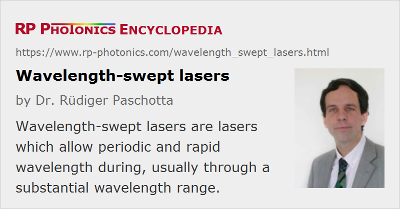

Wavelength-swept Lasers
Definition: lasers which allow for period and fast wavelength tuning
More general term: tunable lasers
How to cite the article; suggest additional literature
Author: Dr. Rüdiger Paschotta
For some applications, it is required to periodically tune the optical wavelength of a laser source through a certain range. In some cases, one requires tuning through a relatively large range of e.g. 100 nm or more, and that quite rapidly, with a sweep frequency of tens or hundreds of kilohertz, sometimes even more than 1 MHz; conventional tunable lasers cannot be tuned that fast. The operation of a wavelength-swept laser implies rapid periodic changes of the instantaneous frequency of the laser output. Typically, one has a kind of triangular frequency modulation: approximately linear up- and down-sweeps, each occupying half of the sweep period. In some cases, however, the instantaneous wavelength of frequency versus time deviates substantially from such a triangular shape.
Operation Principles
Various kinds of wavelength-swept lasers have been developed for such purposes, and the most important operation principles are described in the following.
Current Tuning
Many laser diodes can to some extent be wavelength-tuned by modulating their drive current, essentially because that affects the junction temperature. Because the involved active volume is relatively small, the junction temperature can react quickly to changes of the drive current. Therefore, relatively rapid wavelength tuning is possible.
Without additional measures, one usually cannot achieve precisely linear frequency chirps. One may apply a pre-distortion of the temporal form of the input current to improve that. Further, it is possible to improve the precision of the frequency sweeps by applying opto-electronic feedback [13].
Wavelength-swept Filter in a Laser Resonator
In many cases, the basic operation principle of a wavelength-swept laser is the following. One has a laser, with a gain medium having a relatively large gain bandwidth, and there is a fast bandpass filter in its laser resonator. If the transmission wavelength of the filter is tuned, the laser wavelength follows accordingly, unless certain speed limits are reached. For high-speed tuning, it is advantageous to have a short photon lifetime of the resonator, i.e., ideally a short resonator combined with high round-trip power losses. When approaching the limits of tuning speed, the laser does not reach steady-state performance parameters, e.g. concerning its instantaneous bandwidth, which however may not be a problem for the application. On the other hand, slow frequency sweeps are easily obtained.
The explained principle of operation is typically applied to fiber lasers and to diode lasers, the latter usually in the form of external-cavity diode lasers (ECDLs). The gain medium can then be considered as a semiconductor optical amplifier (SOA). The by far highest sweep frequencies are achieved with semiconductor lasers, having short resonators and low photon lifetimes. On the other hand, fiber lasers can produce substantially higher output powers and can access some additional wavelength regions.
Often used wavelength tuning elements are the following:
- A Fabry–Pérot interferometer can be equipped with a piezo transducer, typically reaching scanning frequencies of tens of kilohertz, sometimes even hundreds of kilohertz (with mechanically resonant excitation).
- For lower scanning speeds, one may also use a diffraction grating in the laser resonator which is tilted with a piezo actuator.
- Some devices are based on MEMS technology (microelectromechanical systems) [14]; low-mass systems are intrinsically faster.
Fourier-domain Mode Locking
Fourier-domain mode locking (FDML) [5] is similar to active mode locking, where however one does not simply modulate the intracavity losses, but instead the transmission wavelength of an intracavity filter. In addition to the similar operation principle described in the previous section, here one precisely synchronizes the modulation of transmission wavelength with the resonator round trips. As a result, the laser operates in a steady state, with the optical powers in the resonator modes staying constant. What changes periodically is only the output wavelength, but lasing at all wavelength simultaneously occurs in that kind of laser. Compared with the previously explained operation principle of a swept laser source, this operation mode is subject to much less laser noise, since lasing at any particular wavelength does not to be re-established in every resonator round-trip. The photon lifetime is no longer a limiting factor.
The output of such a laser can also be considered as a periodic sequence of strongly chirped pulses, similar to the ultrashort pulses from some ordinary mode-locked lasers, but with the pulse duration being so long that subsequent pulses are actually no longer separated (i.e., with low power in between).
Of course, certain constraints are introduced by the principle of Fourier domain mode locking. The modulation frequency needs to be precisely synchronized with the round-trip time of the resonator. It can actually also be an integer multiple of the round-trip frequency, resulting in a correspondingly higher sweep frequency. For very low sweep frequencies, one would need a very long resonator, which may be impractical; however, such lasers are very useful for high sweep frequencies, which are beneficial for applications like optical coherence tomography (see below). In fact, the highest sweep frequencies – sometimes above 1 MHz even in commercial products – are achieved with Fourier domain mode locking.
Sources With Dispersion Tuning
It is also possible to realize wavelength-swept laser sources which do not require an intracavity bandpass filter. Instead, they can be based on dispersion tuning [7]. Essentially, this means active mode locking of a laser where the resonator contains elements with large chromatic dispersion. For a constant modulation frequency, the laser will emit short (typically picosecond) pulses at a wavelength which the laser chooses such that the round-trip time matches the modulation frequency. By tuning the modulation frequency within some narrow range, one can tune the laser to operate on different wavelengths. The tuning speed is limited by the need of the laser to find a new steady state.
Mode-locked Laser Plus Dispersive Delay Line
Another possibility is to use a femtosecond laser and send its output pulses through a delay line with strong chromatic dispersion [3]. That leads to much longer, strongly chirped output pulses, which also perform a frequency sweep. In contrast to other swept sources, the output power is not approximately constant, but undergoes a strong modulations with the sweep frequency. While this technical approach may be relatively expensive, it could be applied to very broadband lasers, leading to the highest possible axial image resolution.
Applications of Wavelength-swept Lasers
A typical application of wavelength-swept lasers is in frequency domain optical coherence tomography (FD-OCT), used e.g. in ophthalmology and dermatology. (The method is more specifically also called SS-OCT.) Here, it is necessary to sweep through a broad wavelength range in order to achieve a high spatial resolution in the direction of the laser beam. At the same time, very high scanning speeds are desirable, because that allows for fast image acquisition.
Another application is the interrogation of fiber-optic sensors [9, 18]. A sensor fiber may contain multiple fiber Bragg gratings with different reflection wavelengths, which are sensitive to the local strain all temperature conditions. For quickly interrogating multiple such sensors, it is necessary to scan the probe laser wavelengths quickly through a wide range, and wavelength-swept lasers are well suited for that purpose.
There are methods of laser range finding where wavelength-swept lasers are applied.
In some cases, the rapid wavelength sweeping is applied in order to suppress nonlinear reflections caused by stimulated Brillouin scattering (SBS), particularly in high-power fiber amplifiers [20].
Suppliers
The RP Photonics Buyer's Guide contains 11 suppliers for wavelength-swept lasers.
Questions and Comments from Users
Here you can submit questions and comments. As far as they get accepted by the author, they will appear above this paragraph together with the author’s answer. The author will decide on acceptance based on certain criteria. Essentially, the issue must be of sufficiently broad interest.
Please do not enter personal data here; we would otherwise delete it soon. (See also our privacy declaration.) If you wish to receive personal feedback or consultancy from the author, please contact him e.g. via e-mail.
By submitting the information, you give your consent to the potential publication of your inputs on our website according to our rules. (If you later retract your consent, we will delete those inputs.) As your inputs are first reviewed by the author, they may be published with some delay.
Bibliography
| [1] | S. H. Yun et al., “High-speed wavelength-swept semiconductor laser with a polygon-scanner-based wavelength swept filter”, Opt. Lett. 28 (20), 1981 (2003), doi:10.1364/OL.28.001981 |
| [2] | M. Choma et al., “Sensitivity advantage of swept source and Fourier domain optical coherence tomography”, Opt. Express 11 (18), 2183 (2003), doi:10.1364/OE.11.002183 |
| [3] | S. Bourquin et al., “Ultrahigh resolution real time OCT imaging using a compact femtosecond Nd:glass laser and nonlinear fiber”, Opt. Express 11 (24), 3290 (2003), doi:10.1364/OE.11.003290 |
| [4] | W. Y. Oh et al., “115 kHz tuning repetition rate ultrahigh-speed wavelength-swept semiconductor laser”, Opt. Lett. 30 (23), 3159 (2005), doi:10.1364/OL.30.003159 |
| [5] | R. Huber, M. Wojtkowski and J. G. Fujimoto, “Fourier domain mode locking (FDML): a new laser operating regime and applications for optical coherence tomography”, Opt. Express 14 (8), 3225 (2006), doi:10.1364/OE.14.003225 |
| [6] | R. Huber et al., “Amplified, frequency swept lasers for frequency domain reflectometry and OCT imaging: design and scaling principles”, Opt. Express 13 (9), 3513 (2005), doi:10.1364/OPEX.13.003513 |
| [7] | S. Yamashita and M. Asano, “Wide and fast wavelength-tunable mode-locked fiber laser based on dispersion tuning”, Opt. Express 14 (20), 9299 (2006), doi:10.1364/OE.14.009299 |
| [8] | R. Huber et al., “Fourier domain mode locking at 1050 nm for ultra-high-speed optical coherence tomography of the human retina at 236,000 axial scans per second”, Opt. Lett. 32 (14), 2049 (2007), doi:10.1364/OL.32.002049 |
| [9] | E. J. Jung et al., “Characterization of FBG sensor interrogation based on a FDML wavelength swept laser”, Opt. Express 16 (21), 16552 (2008), doi:10.1364/OE.16.016552 |
| [10] | M. Y. Jeon et al., “High-speed and wide bandwidth Fourier domain mode-locked wavelength swept laser with multiple SOAs”, Opt. Express 16 (4), 2547 (2008), doi:10.1364/OE.16.002547 |
| [11] | Y. Zhou et al., “Tunable VCSEL with ultra-thin high contrast grating for high-speed tuning”, Opt. Express 16 (18), 14221 (2008), doi:10.1364/OE.16.014221 |
| [12] | S. Yamashita et al., “Wide and fast wavelength-swept fiber laser based on dispersion tuning for dynamic sensing” (review article), J. Sensors, Vol. 2009, Article ID 572835 (2009) |
| [13] | N. Satyan et al., “Precise control of broadband frequency chirps using optoelectronic feedback”, Opt. Express 17 (18), 15991 (2009), doi:10.1364/OE.17.015991 |
| [14] | M. Kuznetsov et al., “Compact ultrafast reflective Fabry–Pérot tunable lasers for OCT imaging applications”, Proc. SPIE 7554, 75541F (2010), doi:10.1117/12.842567 |
| [15] | S.-W. Lee et al., “Wide tuning range wavelength-swept laser with a single SOA at 1020 nm for ultrahigh resolution Fourier-domain optical coherence tomography”, Opt. Express 19 (22), 21227 (2011), doi:10.1364/OE.19.021227 |
| [16] | T. Klein et al., “Megahertz OCT for ultrawide-field retinal imaging with a 1050 nm Fourier domain mode-locked laser”, Opt. Express 19 (4), 3044 (2011), doi:10.1364/OE.19.003044 |
| [17] | V. Jayaraman et al., “Rapidly swept, ultra-widely-tunable 1060 nm MEMS-VCSELs”, Electron. Lett. 48 (21), 1331 (2012), doi:10.1049/el.2012.3180 |
| [18] | Y. S. Kwon et al., “Dynamic sensor interrogation using wavelength-swept laser with a polygon-scanner-based wavelength filter”, Sensors 13 (8), 9669 (2013), doi:10.3390/s130809669 |
| [19] | T. Klein and R. Huber, “High-speed OCT light sources and systems” (invited article), Biomed Opt. Express 8 (2), 828 (2017), doi:10.1364/BOE.8.000828 |
| [20] | J. O. White et al., “1.6 kW Yb fiber amplifier using chirped seed amplification for stimulated Brillouin scattering suppression”, Appl. Opt. 56 (3), B116 (2017), doi:10.1364/AO.56.00B116 |
See also: tunable lasers, optical coherence tomography, instantaneous frequency
and other articles in the category lasers
|  |
If you like this page, please share the link with your friends and colleagues, e.g. via social media:
These sharing buttons are implemented in a privacy-friendly way!